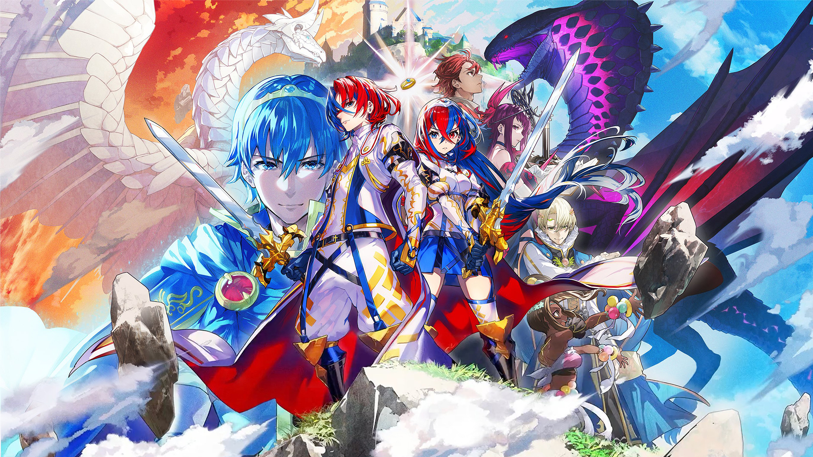

Role-Playing Games
DELTARUNE Chapter 1&2
Review
Deltarune is a wonderfully charming RPG created by indie developer Toby Fox as a follow-up and parallel story to his first massively successful project, Undertale. Although only 2 of the game's 7 chapters are currently available, it has already amassed countless fans with its witty writing, beautiful soundtrack, and heartfelt story of destiny and self-discovery. The core gameplay combines standard turn-based RPG elements with real-time action, as the player is able to dodge enemies' attacks by moving their "soul" around the screen.
Overall, the game's difficulty is fairly tame, making it highly accessible to anyone. However, there are a few optional secret bosses that require mastery of both turn-based strategy and dodging to defeat, providing a worthwhile experience for players seeking a challenge.
Here are some tips and tricks!
- Stay close to enemies' attacks to earn Tension Points! These can be used to cast powerful offensive and defensive spells!
- After a battle, the rewards you earn increase with the amount of Tension Points you have, so be resourceful with them!
- Pay attention to the dialogue! You may find hints that lead to powerful items and interesting lore.
Did you know?
- Deltarune is an anagram of Undertale. So is Rental Due! And Tundra Eel!
- Chapter 1 originally released under the title "SURVEY_PROGRAM" accompanied by a license agreement which simply read "YOU ACCEPT EVERYTHING THAT WILL HAPPEN FROM NOW ON."
- Post-release update patches have integrated several glitches and exploits discovered by players into the game as new features. One such exploit even overhauls the unique combat mechanics for one of the secret boss encounters.
Rating
9/10
Fire Emblem Engage
Review
Fire Emblem Engage is the 17th mainline entry in Intelligent Systems's beloved Fire Emblem series of tactical JRPGs. Serving as an anniversary title of sorts, this entry celebrates the series' legacy by including the 12 Emblems - spirits of past heroes like Marth and Ike who grant game-changing abilities such as long-range strikes, terrain manipulation, and full-party heals. While you might expect such powerful abilities to make the game far too easy, the intricately designed maps and clever enemy formations provide a surprisingly well-balanced experience that accomodates unique strategies without ever feeling like a slog.
With its stunningly vibrant visuals, endearing cast of characters, and impressive strategic depth, Fire Emblem Engage delivers a tactical playground that will keep both newcomers and returning fans engaged from start to finish!
Here are some tips and tricks!
- Use your stronger units to weaken enemies, then have your weaker units finish them off for easy experience!
- Some unit types gain unique bonuses when equipping certain Emblems. Try out different combinations to see what works best!
- Promote your units as early as possible! Units in promoted classes typically have a higher chance to gain stats when they level up!
Did you know?
- Each Emblem's optional side mission is based on a chapter from their home game.
- Character names share a theme based on the nation they come from. Characters from Brodia are named after gemstones, while those from Elusia are named after flowers.
Strangely, characters from Firene and Solm are named after French luxury brands and Italian desserts respectively.
Rating
8/10